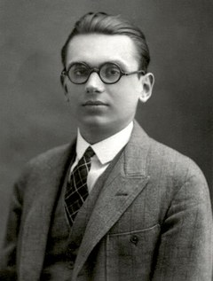

希望の時代、あるいは数学を機械にかける夢
2+2=4は正しい。誰もが知っている。では、なぜ正しいのか。
「当たり前だから」ではない。数学者はそれを証明する。証明とは、認められたルール——公理公理（axiom）証明なしで出発点として受け入れる命題のこと。「この体系はここから始める」と宣言する土台。——から出発して、論理的な手順を踏んで結論に至ること。2+2=4も、「自然数とはこういうものだ」という出発点のルールから、ちゃんと証明できる。ではそのルール自体は、本当に正しいと言えるのか。ルールを証明しようとすると、もっと前のルールが必要になる。そのルールを証明しようとすると、さらに前のルールが要る。どこかで「これは証明なしに正しいと認める」という地点が必要になる。
ここに、数学者たちが長い間目をそらしてきた問いがある。数学の出発点は、本当に安全なのか。19世紀の終わり、その問いが突然、無視できないものになった。素朴に見えるルールから出発して、正しい手順で推論しただけなのに、矛盾が出てきたのだ。「自分自身を含まない集合すべての集合」を考えると、それは自分自身を含むのか含まないのか——どちらに転んでも矛盾する。数学の足元に、穴が空いていた。
1900年8月8日、パリ。第二回国際数学者会議国際数学者会議（ICM）4年に一度開かれる、世界中の数学者が集まる最大の国際会議。1897年にチューリッヒで第一回が開かれて以来、現在まで続いている。フィールズ賞の授賞式もここで行われる。1900年のパリ会議は20世紀の幕開けに重なり、ヒルベルトの23問題講演が「20世紀数学の羅針盤」として歴史的な位置を占めることになった。の講壇に立った38歳のダフィット・ヒルベルトDavid Hilbert（1862-1943）19世紀末から20世紀初頭にかけてドイツ・ゲッティンゲン大学を拠点に活躍した数学者。幾何学の公理化、積分方程式論、数学基礎論など、数学の広範な分野に影響を与えた、当時の数学界の中心人物。は、20世紀の数学者が取り組むべき23の未解決問題を提示した。聴衆にはこれから数学界を担う人々が座っていた。その第二の問題はこう述べていた——算術の公理公理（axiom）証明なしで出発点として受け入れる命題のこと。定義の代わりではなく、「この体系はここから始める」と宣言する土台。平面幾何学の「点・線・平面」の扱い方を決めるようなもの。が互いに矛盾しないことを証明せよ。
それは「数学は正しい」と証明してほしい、という要求だった。奇妙な要求に聞こえるかもしれない。2+2=4が間違っているはずがない、と誰もが思う。しかし19世紀の終わり、数学者たちは自分たちの足元で静かに地面が崩れ始めているのを感じていた。カントールの集合論に現れる逆説、ラッセルが1901年に発見した「自分自身を含まない集合の集合」の矛盾、ブラリ＝フォルティの逆説——これらはすべて、素朴に見えるルールから出発して厳密に推論するだけで矛盾が出てくる、という不気味な事実を示していた。数学の足元には穴が空いていた。

ダフィット・ヒルベルト
David Hilbert · 1862–1943
ケーニヒスベルク生まれ。1895年からゲッティンゲン大学教授として、当時の世界の数学の中心地を築いた。幾何学・積分方程式論・数理物理学・数学基礎論と広範な分野で決定的な業績を残す。「数学を記号とルールの機械にかけて完璧に基礎づける」——この構想はヒルベルト・プログラムと呼ばれ、30年がかりで進められた。
Photograph: University of Göttingen faculty postcard, c. 1912 / Public domain via Wikimedia Commons
ヒルベルトの構想は壮大だった。数学のすべてを、記号とルールだけで動く形式体系形式体系（formal system）記号とそれを変形するルールだけで動く、機械のような数学システム。中身の「意味」を一切考えず、文字列を別の文字列に書き換える操作だけを実行する。現代のコンピュータプログラムの遠い先祖のようなもの。にしてしまおう、と彼は言った。そしてその体系が、(1) すべての真理を証明でき、かつ (2) 決して矛盾しないことを、(3) その体系自身の道具で示そう。もしこれができれば、数学は神学にも哲学にも頼らず、自分の足で立つことができる。
Wir müssen wissen. Wir werden wissen.
我々は知らねばならない。我々は知るだろう。
— David Hilbert, 1930年9月8日、ケーニヒスベルクでの講演末尾。墓碑銘にも刻まれている
この言葉が発せられた前日、同じケーニヒスベルクの学会場で、無名に近い一人の若いオーストリア人が短い発表を行っていた。クルト・ゲーデルKurt Gödel（1906-1978）オーストリア出身の論理学者。1931年の不完全性定理のほか、一階述語論理の完全性定理（1929）、集合論における選択公理と連続体仮説の相対的無矛盾性（1938）などの業績がある。後年は深刻な心気症と被毒妄想に苦しみ、最終的に食事を拒んで餓死した。という名前で、ウィーン大学で博士号を取ったばかりの24歳だった。彼の発表の内容は、ヒルベルトが翌日熱く語る夢を、静かに、決定的に終わらせるものだった。ヒルベルトがその事実を知るのはもう少し先のことになる。

クルト・ゲーデル
Kurt Gödel · 1906–1978
オーストリア・ブリュン（現チェコ・ブルノ）生まれ。少年時代のあだ名は「なぜ君（der Herr Warum）」。ウィーン大学でハンス・ハーンのもとで博士号を取得後、ウィーン学団の議論に参加しながらも、主流の論理実証主義とは距離を取り続けた。1931年の論文のとき25歳。後年プリンストン高等研究所でアインシュタインと親交を結んだ。
Photograph: Kurt Gödel Papers, Institute for Advanced Study, Princeton, NJ / Public domain via Wikimedia Commons
1931年の衝撃
1931年、ゲーデルの論文が『月刊数学物理学報（Monatshefte für Mathematik und Physik）』38巻に掲載される。タイトルは『プリンキピア・マテマティカおよび関連体系における形式的に決定不能な命題について I』。ページ数にしてわずか25ページ。末尾に「I」が付いていたのは続編を予定していたからだが、彼は続編を書かなかった——書く必要がなくなったからだ。
反応は地震のようだった。論理学者パウル・ベルナイスPaul Bernays（1888-1977）ヒルベルトの最も近い共同研究者で、『数学の基礎』の共著者。ヒルベルト・プログラムの内部からゲーデルの結果を最初に受け止めた一人。のちにゲーデルと30年以上にわたる書簡を交わし続けた。とジョン・フォン・ノイマンはすぐにその意味を見抜いた。とりわけフォン・ノイマンは、ゲーデルがまだ公に語っていなかった「第二不完全性定理」——体系は自分の無矛盾性を自分では証明できない——を、論文を読んだその場で独立に導き出してゲーデルに手紙を書いた。「ヒルベルト・プログラムは実現不可能になった」。フォン・ノイマンはカルナップに宛ててそう書いている。ヒルベルト・プログラムの核心は、論文発表からわずか数ヶ月で内部から崩れていった。
小さな体系の中で、壁を探してみる
ゲーデルの証明の核心を、数式を一つも使わずに体験してもらう。これから動かすのは、ダグラス・ホフスタッターが『ゲーデル・エッシャー・バッハ』で紹介したMIU-システムという小さなおもちゃの形式体系だ。アルファベットは M・I・U の3文字だけ。使えるルールは4つ。出発点は MI、ゴールは MU。
ルールはすべて「機械的な書き換え」であって、意味を考える必要はまったくない。コンピュータがやるような、純粋な記号操作だ。形式体系の最小モデルと言っていい。
一つだけ、始める前に言っておく。ルールを見た瞬間に「どうせ無理でしょ」と感じた人は、そのままでいい。その外から見えたという感覚が、すでにゲーデルの話の核心にいる。なぜ外から見ると見えるのに、中からは見えないのか——それがこの体験で確かめたいことだ。逆に「わからない、でも試してみよう」という人も、そのままで正しい入口にいる。どちらの入り方でも、たどり着く場所は同じだ。
さあ、MIからMUへ行けるか試してみてほしい。
MI から MU を作り出せ。ルールは適用できる条件のときだけボタンが緑の「使える」バッジになる。薄くなっているボタンは、いま使えない。答えから言うと、MI から MU には、このルールの中では絶対にたどり着けない。どれだけ長く試しても無駄だ。では、なぜ？ 系の中でいくら頑張っても、不可能性の理由は見えない。
視点を一段上げる必要がある。「文字列の中にある I の個数を3で割った余り」に注目してみよう。
出発点 MI は I が1個 → 余り 1。各ルールがこの余りに何をするかを調べると、ルール1は I を増やさない（余りは変わらない）、ルール2は I の数を2倍にする（余りは 1→2→1→2... と往復するだけで0にならない）、ルール3は3個減らす（余りは変わらない）、ルール4は I に触らない——つまりどのルールを使っても「Iの数 mod 3」を 0 にできない。しかし目標 MU は I が0個 → 余り 0。出発地点から目標地点まで、余りの「色」が合っていない。
あなたが「系の中」で真剣に探していた間は、なぜ届かないのかが見えなかった。でも「Iの個数 mod 3」という視点を系の外から持ち込んだ瞬間、不可能性が一発で見える。この落差——中からは見えない真理が、外からは一瞬でわかる——が、不完全性定理の骨格だ。
どうだっただろうか。何手試しても届かない、あの感触。「もう少しで行けそう」という気がするのに、どこかで必ずループに入る。たどり着けない理由が、やっている間は見えない。これは能力の問題ではない。ルールを正しく適用している。それでも届かない。この「届かなさ」こそが、ゲーデルが算術の中で発見したものの縮小模型だ。
あなたが何手試したかは重要ではない。持ち帰ってほしいのは、「系の中で真剣に探している間は、なぜ不可能なのかが見えなかった」という体感のほうだ。一段上の視点——「Iの個数を3で割った余り」——を手に入れた瞬間に、不可能性が一発で見える。しかしその視点は、MIU-システムのルールブックのどこにも書かれていない。系を動かす道具と、系を外から眺める道具は、別の階にある。
ゲーデルは何をしたのか — 2階建ての構造を見る
ただし、MIU-Systemと算術のあいだには、決定的な違いがある。MIU-Systemでは、プレイヤーが使える道具（文字列の書き換え）と、観察者が使う道具（算数）は最初から別物だった。観察者が「外の算数」を借りてきて不可能性を証明するのは、ある意味で当然に見える。MIU-Systemにはそもそも数の概念がないのだから。ところが算術は違う。算術のプレイヤーは最初から数を扱える。だから「算術は自分のことを自分で全部語れるはずだ」という期待が生まれる。ヒルベルトはその期待に賭けた。ゲーデルが壊したのは、その期待だ。
ここまでの体験を、そのまま絵にしてみる。あなたが MIU-システムの中で戦っていたとき、2つの階が存在していた。下の階は「ルールを機械的に適用する場所」。上の階は「系を外から眺めて理屈を言う場所」。普段この2つは完全に別の場所にある。下の階で働く人は上の階を見ない。上の階で考える人は下の階を動かさない。
I の個数を 3 で割った余り」。算術なら「この公理系からどんな命題が証明できるか」。MI → MII → MIIII → MIIIIU → MUIU → ...（文字列の意味ではなくパターンだけを見て書き換えている）この図を頭に入れたうえで、もう一度「ゲーデルは何をしたのか」を整理する。彼がやったことは、一文で言えばこうなる。算術の中に、算術について語る文を埋め込んで、その文に自分自身のことを喋らせた。そして出来上がった文は、次のように主張していた——「この文は、この体系では証明できない」。
この文を仮に G と呼ぶ。G は算術の命題だから、真か偽かは決まっている。しかしここに罠がある。もし G が証明できるなら、G の内容（＝G は証明できない）に矛盾する。体系が嘘をついたことになり、無矛盾でなくなる。だから G は証明できない。しかし「G は証明できない」というのは、まさに G が言っていたことだ。つまり G は——証明できないまま、真である。これが第一不完全性定理の骨子だ。
一つだけ注意がいる。ゲーデルは「算術の中の G が証明できない」ことを算術の外から論証している。つまり、証明の舞台はメタ数学の階であり、証明の対象である G が住んでいるのは形式体系の階だ。ゲーデル自身は上の階に立って、「下の階にはこういう命題が住んでいて、しかもそれはこの下の階の道具では捕まえられない」と指差している。「証明できないことを証明した」という言い方が当たっている——ただし、証明した場所と、証明された対象の場所は別の階にある。
では肝心の、「どうやって算術の中に上の階を埋め込んだのか」。その手品がゲーデル数化だ。
1つの数に
→ 2⁴ × 3¹¹ × 5¹ × 7¹² × 11⁷ × 13¹¹ × 17⁵ × 19⁶ = ひとつのとても大きな自然数 n
→ 「p は n の証明である」というメタ数学的関係が、自然数 p と n の間の算術的関係として書けるようになる。
登場
——ここで、その命題 G 自身のゲーデル数がちょうど g になるように組み立てる。すると G は自分自身について語っていることになる。
この「自己言及」の仕掛けは、古代ギリシャの嘘つきのパラドックス——「私は今、嘘をついている」——と構造がそっくりだ。ゲーデル自身、論文の冒頭でそのことを認めている。しかし彼の偉業は、このパラドックス的な文を、ただの言葉遊びから算術の中の厳密な数学命題に変換したことだった。嘘つきの文は自然言語の曖昧さに頼っている。ゲーデル文は自然数の足し算と掛け算だけで書かれている。曖昧さの入り込む余地がない。
証明の骨格 — 4ステップで見る
ここまでの体験と図解を踏まえて、不完全性定理の証明の骨格を追ってみよう。正確な証明は25ページの論文と膨大な補題を必要とするが、筋道だけなら4つのステップで語れる。各ステップをクリックして展開してほしい。
まず、形式体系で使われるすべての記号（論理記号、変数、定数）に番号を振る。次に、命題（記号の列）全体を、ひとつの巨大な自然数に符号化する方法を決める。素数の冪を使うのがゲーデルの方法で、これなら異なる命題は必ず異なる数に対応する。
さらに重要なのは、証明もまた命題の列だから、同じやり方でひとつの数に変換できるということ。結果として、「p は n の証明である」という本来メタ数学的な関係が、自然数同士の算術的な関係として書けるようになる。上の階の言語が、下の階の中に入り込んだ瞬間だ。
次にゲーデルは、カントールの対角線論法を応用して、自分自身のゲーデル数に言及する命題を体系の中で構成する技術を開発する。これを使うと、以下のような命題 G が作れる。
G: 「ゲーデル数 g を持つ命題は、この体系では証明不可能である」——ただし、この命題 G 自身のゲーデル数が g である。
つまり G は、翻訳して読めば「この私は証明できない」と言っている。この仕掛けが作れるのは、体系が十分に強い（算術を含む）からだ。弱すぎる体系では、この自己言及は構成できない。
体系が無矛盾だと仮定する。場合分けで考えよう。
(a) もし G が証明できるなら：G の中身は「G は証明できない」だから、体系は偽の命題を証明したことになる。これは無矛盾の仮定に反する。よって G は証明できない。
(b) しかし、G が証明できない、というのはまさに G が主張していたこと。つまり G は真である——ただし、この体系の中では証明できない。こうして真だが証明不可能な命題が存在することが示される。これが第一不完全性定理。
第一定理の証明を丁寧に追うと、「もし体系が無矛盾なら G は証明できない」という主張そのものが、体系の内部で形式化できることがわかる。記号で書くと：Cons(F) → G（Fが無矛盾なら、Gは真）。
ここでもし体系が自分自身の無矛盾性 Cons(F) を証明できたとしたら、上の含意から G も証明できることになる。しかし第一定理より G は証明できない。矛盾。よって体系はその内部では自分の無矛盾性を証明できない。これが第二不完全性定理——ヒルベルト・プログラムの核心への直接の打撃だ。
この4ステップを眺めると、MIU-システムで経験したことの構造がそのまま見えてくる。系の中だけで探すと、真理の一部が必ず取り逃される。ただし違いは、算術という体系は自分の外側の視点を自分の中に埋め込めるほど強力だったということ。力が弱ければ不完全性は起きない——だが力を持った瞬間に、この宿命を背負う。
1900年から1936年まで、32年の弧
20世紀前半の論理学は、わずか30数年のあいだに「数学を完璧に基礎づけよう」という希望から「計算可能性の原理的限界」という発見まで、急速に駆け抜けた。不完全性定理はその弧の中央に位置する転換点だ。
この時代の論理学者たちが発見したのは、「何ができて何ができないか」という問い自体が、厳密な数学の対象になる、ということだった。不完全性定理は一発勝負の事件ではなく、計算可能性理論・証明論・モデル理論という20世紀論理学の3本柱の出発点になった。
誤用の歴史と、本当に残るもの
不完全性定理ほど、専門家の手を離れて誤用されてきた数学の定理は珍しい。「数学にも限界がある」という刺激的な響きが、哲学・文芸批評・神秘思想・AI論・経済学・ポストモダンまで、ありとあらゆる場所に流れ出した。だが誤用のほとんどは、定理が何について語っているかを見失ったところから始まっている。
スウェーデンの論理学者トルケル・フランセンは2005年、『ゲーデルの定理 — その利用と誤用の不完全な手引』という書物を書いた。タイトル自体が皮肉で、定理は「不完全」なのに、その誤用の網羅は「完全」にはできない、と言っている。フランセンは特定の誤用例を数十ページにわたって丁寧に解体した。ポストモダン批評家、神秘主義者、ロジャー・ペンローズのような著名な物理学者まで、彼の分解対象になった。
定理が何も語っていない領域で、定理がすべてを語っているかのように引用される——それが誤用の常套手段だ。
— Torkel Franzén, Gödel's Theorem: An Incomplete Guide to Its Use and Abuse (2005, 趣旨の意訳)
定理は具体的に、こう言っている。(1) 算術を含む (2) 有限個の公理で記述でき (3) 無矛盾な形式体系には、(4) その体系の中では証明も反証もできない命題が存在する。前提条件が4つもある厳しい主張であって、「人間の理性」や「宇宙全体」や「真理そのもの」について語る定理ではない。それらの領域でこの定理を使うには、まず「人間の理性は算術を含む形式体系である」ことを独立に示さねばならず、それは定理から出てくることではない。
ここで一つクイズを。読者がこの記事を通じて得たのは、定理への感触だけではなく、定理が何について語っていないかを見抜く感覚のはずだ。それを確かめたい。
次の主張のうち、不完全性定理の誤用はどれだろう？
では、誤用を取り除いたあとに残るのは何か。それは虚無でもニヒリズムでもない。残るのは次のような理解だ。十分に豊かな記号の体系は、自分自身を完全には閉じることができない。自分を語る鏡は自分の外にある。そして外を持つことは、決して欠陥ではなく、むしろ体系が「豊か」であることの証でもある。ゲーデルは数学に限界を突きつけたのではない。数学のもつ、自分で自分を映すには少しだけ余白を持たないといけない、その慎ましさを暴いたのだ。
これは絶望ではない。地図がどれだけ精密でも、地図は地形ではない。地図に描けない部分があることは、地形が存在しないことを意味しない。むしろ、地形が地図より豊かだということを意味する。算術はルールブックより豊かだ。そのことを、ゲーデルは証明した。
Über formal unentscheidbare Sätze der Principia Mathematica und verwandter Systeme I
不完全性定理の原論文。25ページ。第一定理と、第二定理の概略が含まれる。当時の数学者の標準的な訓練を受けていれば読めるが、ゲーデル数化の具体構成は相当に込み入っている。
定理の証明を、数式を極力使わずに一般読者向けに解説した古典。不完全性定理を独学しようとする人に今も最初に薦められる一冊。原書は Gödel's Proof（New York University Press）。
Gödel's Theorem: An Incomplete Guide to Its Use and Abuse
定理の誤用に対する最も包括的な反駁書。ポストモダン批評からペンローズの議論まで、実例を列挙して一つひとつ解体する。論理学者による「注意書き」として必読。
Gödel's Incompleteness Theorems
定理の現代的な定式化、証明の技術的詳細、哲学的含意、よくある誤解まで、学術的に最新の情報を網羅している無料オンライン記事。これから深掘りする読者の起点として最適。
e. Tamaki